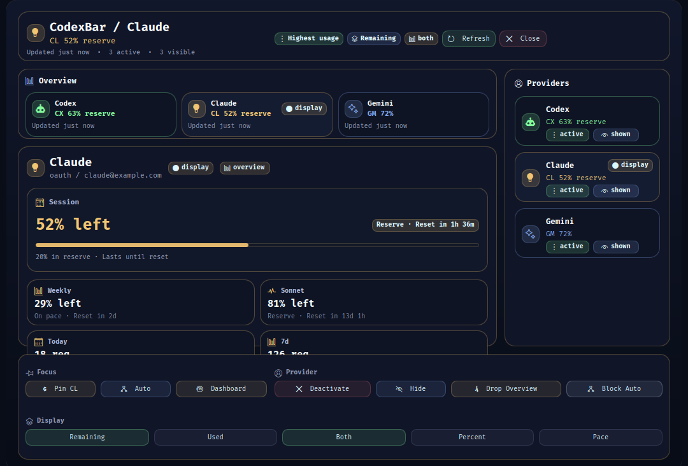

CodexBar
Linux-first quota visibility for Codex, Claude, and Gemini, inspired by the original CodexBar by Steipete.
Keep quota state visible.
CodexBar caches provider usage, service status, local usage, and history in a daemon, renders a compact Waybar chip, and opens a QuickShell panel for overview, provider detail, history, and settings.
Requirements: Linux, Ruby, QuickShell for the panel, and Waybar for the chip.
Install: make install && make configure-user
Waybar render: codexbar waybar render
No native desktop bundle, updater feed, widget extension, or tap/cask package is part of this release.
- Daemon-backed cached quota state for codex, claude, and gemini.
- Waybar chip with provider icon and quota percentages.
- Gemini model buckets and local CLI token totals stay separate in detail views.
- QuickShell panel with Overview, Provider Detail, History, and Settings views.
- CLI-first config, local status, cost, history, storage, and cache-control surface through codexbar.

Runtime
Ruby handles config, provider fetch, normalization, snapshots, auxiliary caches, and CLI actions. QuickShell renders the modal panel, and Waybar reads cached JSON only.
Install
The release installs to a stable user prefix so the development checkout can be renamed without breaking the desktop.
Release posture
Preview validation is make check. Stable validation is make check-live on a credentialed Linux machine.